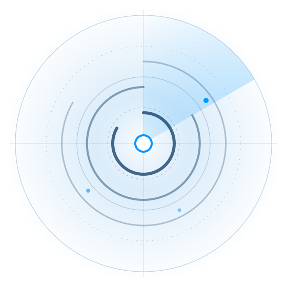

We take the work, not the credit
Every detection, playbook and tuning adjustment lives in your environment. Even if you leave, your defenses stay.
Managed SOC
Your team can step out of the hurricane of alerts; ours stays in it. Named U.S.-based analysts investigate, decide and act, so fewer empty escalations reach your team.

Figures as published on hurricanelabs.com/managed-soc. Written as real text, so search engines and screen readers can read them.
What you get
24/7 monitoring by U.S.-based analysts. No offshore handoffs, no midnight contractor rotations.
A named expert who knows your environment, builds new detections for it, and picks up the phone when you call.
Triaging endpoints, tracing suspicious links, validating lateral movement, quarantining hosts and blocking IPs.
Signals correlated across tools and over time, so the alerts that reach you are the ones that matter.
Interactive mapping shows where detections are strong, where they’re thin, and where gaps are closing.
When an alert enters Tempest, Haze starts gathering evidence and context, so your analyst begins with context, not a blank page.
Transparency
Most SOC vendors send you an alert and leave you to figure out the rest. Every Hurricane Labs SOC ticket is a narrative.
Built on human expertise
Our U.S.-based analysts are trained across Splunk Enterprise Security and MITRE ATT&CK and hold active certifications including Security+, CySA+, CEH and CISSP. They spend an average of 20 minutes on each alert because they’re expected to investigate it.
“The support we received over the weekend during a ransomware investigation was excellent. They provided regular updates, went above and beyond to verify threat levels, and even called to keep us posted.”
Built for your stack
Why teams pick us
Every detection, playbook and tuning adjustment lives in your environment. Even if you leave, your defenses stay.
Full visibility into SOC activity, with daily reporting, clear escalations and practical tuning recommendations.
No chatbots, no endless ticket portals. You speak to an analyst who already knows your environment.
We’ll trace an ingestion failure down to the TCP handshake. We never stop at “it must be a network issue.”
In the United States. U.S.-based analysts cover every shift, every weekend and every holiday, with no offshore triage, no contractors and no handoffs at midnight.
The search results that fired the alert, source and destination IPs, user context, the triggering device and rule, actions already taken, the close reason, threat intelligence lookups, and the playbook used.
Every detection, playbook and tuning adjustment lives directly in your environment, so your defenses stay where they are.
A no-cost review of your current detection coverage, data quality and alert tuning, with a written report of specific recommendations. Yours to keep, even if we never work together.
Before we ask for your business, we prove we’re useful. Get a no-cost SOC Health Check with a written report you keep.
Schedule a SOC Health CheckConcept notes
Checked on 5 October 2026. These are things I observed on hurricanelabs.com, and this page shows how each one could look once fixed.